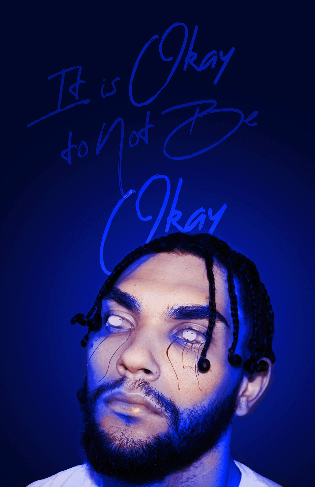
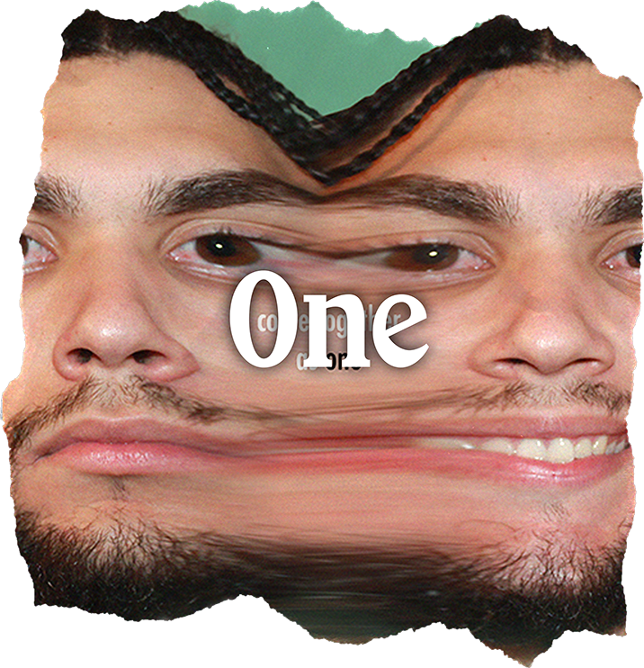
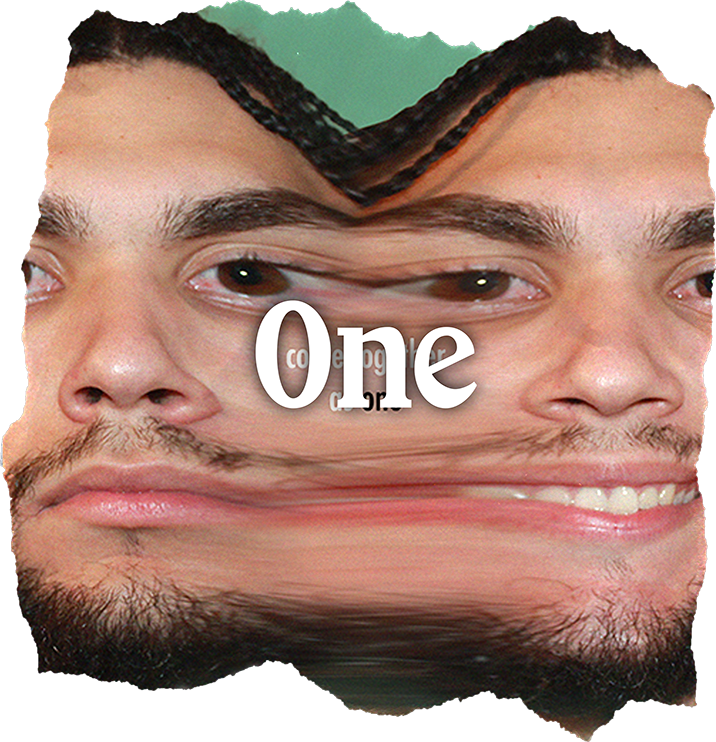
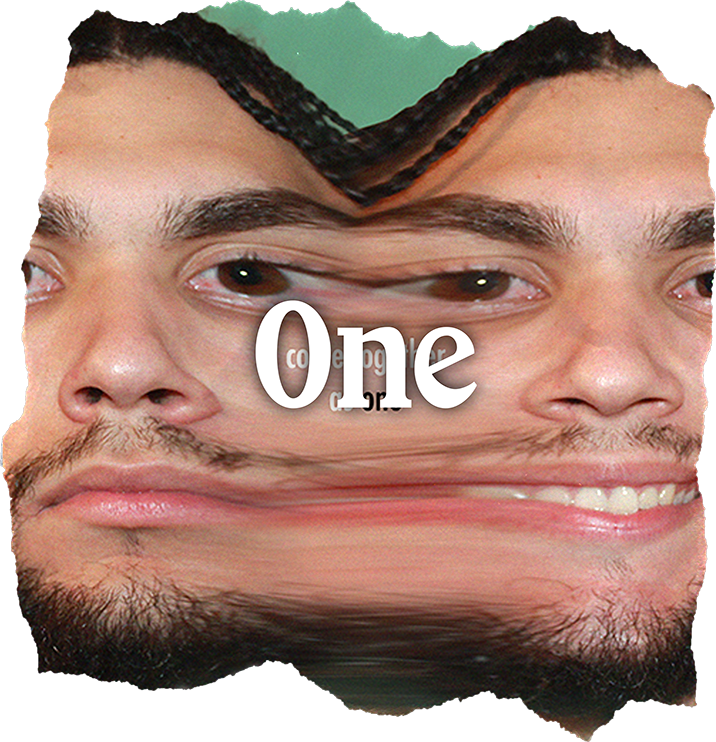

This body of work is very special to me. I try to be very in tune to how men act and how society thinks men should act. Society feels that men need to shut up. That men need to be closed off. Silent when it comes to emotions and mental health. And I have been trained, as a man, to be tough. To not show my feelings. To “act like a man”. But to “act like a man” shouldn't mean, not to have emotion or feeling. It shouldn't mean that I have to roll with the punches, rub some dirt on it and get back up for the next one. It shouldn't mean that I can't cry when I'm most vulnerable. For me, being a man means accepting the fact that you can't fix every problem. Being a man means that I can wear my emotions on my sleeve and not have it trapped and locked inside. Being a man means being able to accept that, It Is Okay To Not Be Okay.


 



More Work
